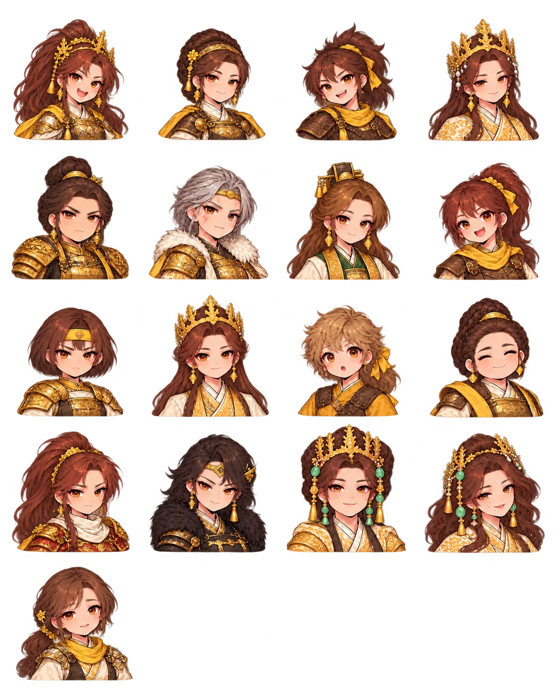
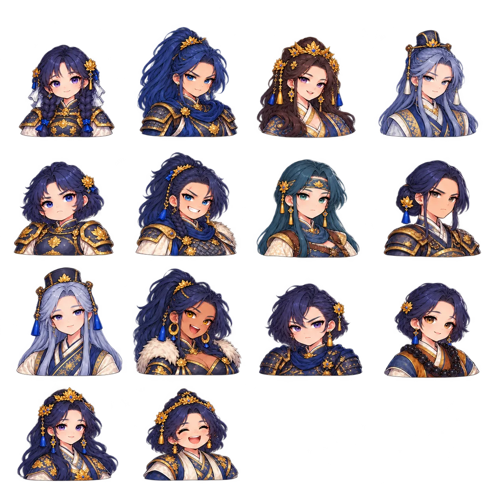
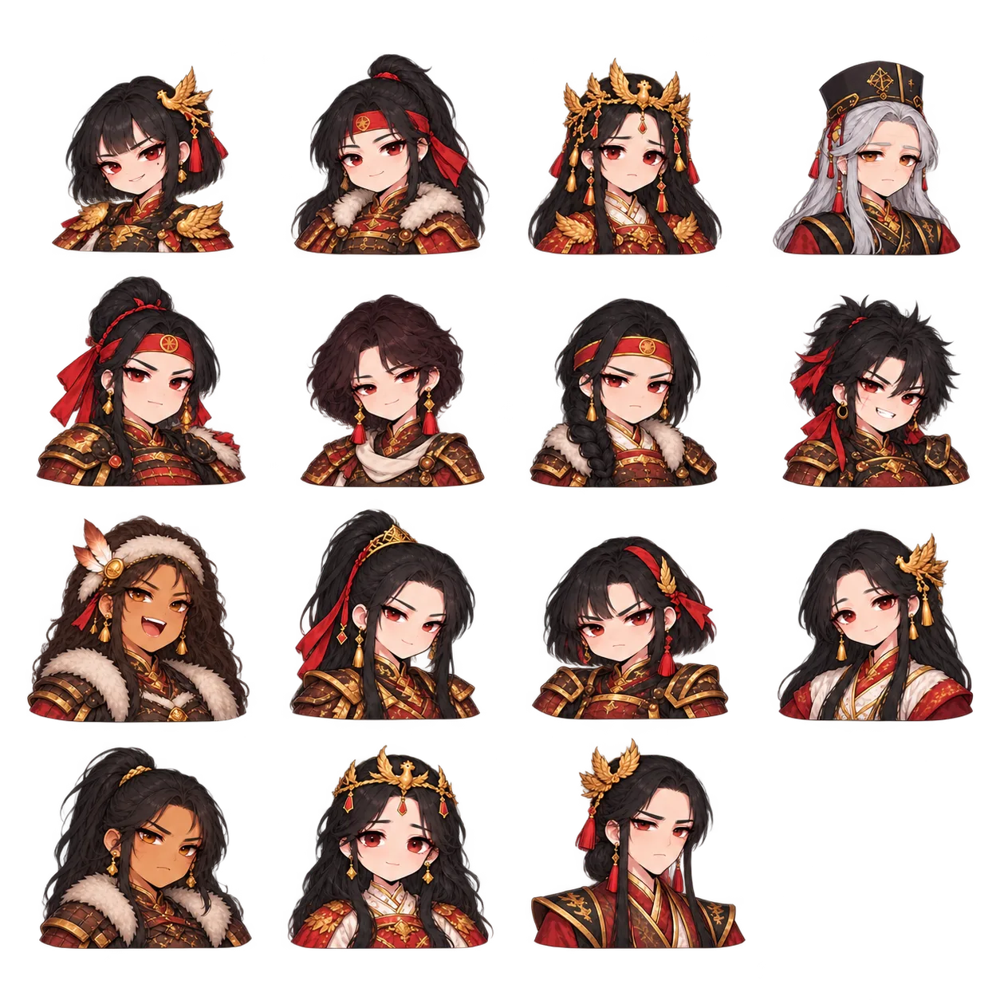
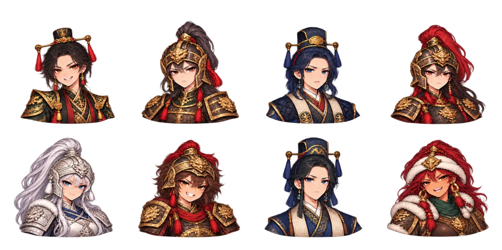

군주·영웅·장군 어깨 초상 56종
기존 인물의 특징을 이어받아 어깨와 상반신 의상까지 다시 그렸습니다. 체크 무늬는 투명도 확인을 위한 화면 배경이며 PNG에 들어 있지 않습니다. 시트에는 넓은 간격을 두었으며 개별 표시에는 실측 좌표를 사용합니다.
신라 · 17명
나라별 투명 PNG 원본김유신김서현김흠순김춘추김품일알천김인문관창반굴김법민열기구근김원술비담진평왕선덕여왕김양도
한 장으로 모아 보기

백제 · 14명
나라별 투명 PNG 원본계백윤충의자왕성충은상의직충상상영흥수흑치상지복신도침부여풍무왕
한 장으로 모아 보기

고구려 · 15명
나라별 투명 PNG 원본연개소문연정토보장왕고정의고연수고혜진안시성주뇌음신말갈 추장연남생연남건연남산검모잠안승영류왕
한 장으로 모아 보기

당 · 8명
나라별 투명 PNG 원본당 태종 이세민이적장량소정방설인귀방효태유인권이근행
한 장으로 모아 보기
